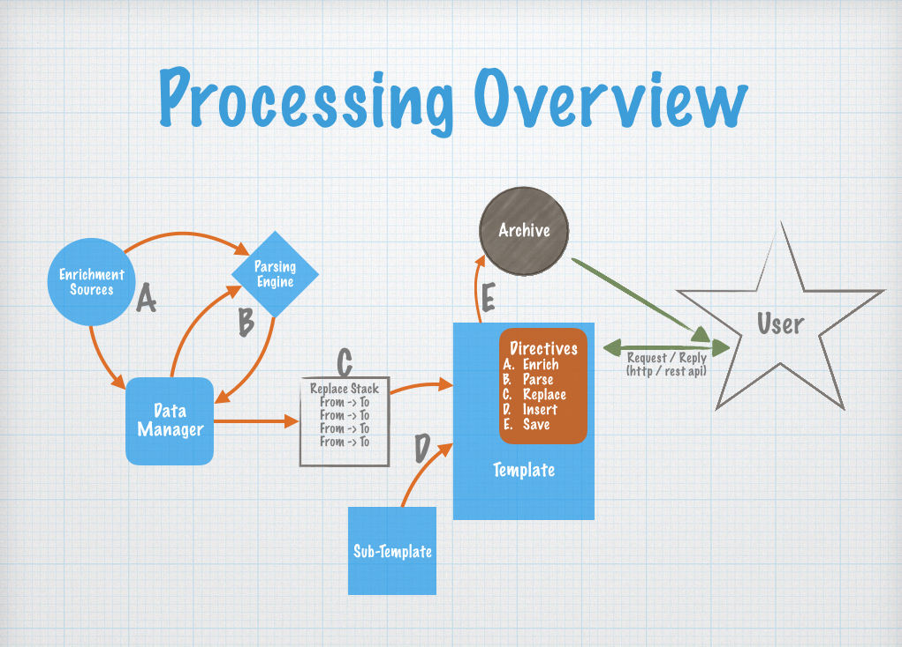

// Optionally initialize a configuration
Config.load(from Env, String, File or URL)
// Create a template cache
Cache cache = new Cache();
cache.put/post template/groups;
or
Cache cache = new Cache(File) - a Folder with one or more .json files with valid Template Groups
// Get a Merger for your template
Merger merger = new Merger(cache, "some.template.name");
// Merge the template
Template template = merger.merge();
// Do something with the output
template.getMergedOutput().getValue() - as a string
template.getMergedOutput().streamOutput(stream) - as an output stream
See the /src/test/java - com.ibm.util.merge.MergeTestHarness.java for a more complete use case.
See Also - JavaDoc Links
Merging Templates produces output, and the merge process is similar to the familiar Mail Merge feature in most word processors. A template is just a block of text that can contain Replacement Tags and Book-marks along with directives that drive the merge process.
See JavaDoc for the com.ibm.util.merge.template.content package for more details, specifically the BookmarkSegment and TagSegment mark-up definitions
There are 5 directives you can use during the merge, see the JavaDoc for the package com.ibm.util.merge.directive:
As you can see, the Data Manager is a key component of the Merge Utility - and it basically provides "path" style access to an object data store. See the package com.ibm.util.merge.data for more details.
In the /src/test/resources folder find:
See the Provider Interface for Enrich Provider feature framework, and the individual providers for more detailed configuration options
See Config.get() for a json string with all configuration options - including template and directive enums
